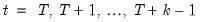

The estimation period method uses data for the estimation sample to compute backcast estimates. The post-backcast sample innovations are initialized to zero and backward recursion is employed to obtain estimates of the pre-estimation sample innovations. A forward recursion is then run to the end of the estimation sample and the resulting values are used as estimates of the innovations.
The alternative forecast available method offers different approaches for dynamic and static forecasting:

|
(52.8)
|
EViews provides three methods for solving models such as these: Gauss-Seidel, E-Newton, and E-QNewton. All three are iterative procedures that attempt to reduce the change in the endogenous variables, ,  , ...,
, ...,  , to zero as the model's equations are solved repeatedly. The first algorithm, Gauss-Seidel, loops through every observation in the forecast sample and at each observation solves the model while treating the past and future values as fixed. The loop is repeated until changes in the values of the endogenous variables between successive iterations become less than a specified tolerance. In essence, discrepancies between the future value of each endogenous variable and the recalculated value of that variable are diffused forwards and backwards through the observations until the discrepancies vanish, assuming the algorithm converges. Although this method is not guaranteed to converge, failure to converge is often a sign of the instability which results when the influence of the past or the future on the present does not die out as the length of time considered is increased. Such instability is often undesirable for other reasons and may indicate a poorly specified model.
, to zero as the model's equations are solved repeatedly. The first algorithm, Gauss-Seidel, loops through every observation in the forecast sample and at each observation solves the model while treating the past and future values as fixed. The loop is repeated until changes in the values of the endogenous variables between successive iterations become less than a specified tolerance. In essence, discrepancies between the future value of each endogenous variable and the recalculated value of that variable are diffused forwards and backwards through the observations until the discrepancies vanish, assuming the algorithm converges. Although this method is not guaranteed to converge, failure to converge is often a sign of the instability which results when the influence of the past or the future on the present does not die out as the length of time considered is increased. Such instability is often undesirable for other reasons and may indicate a poorly specified model.
The second and third methods, E-Newton and E-QNewton (Brayton, 2011), apply the well-known Newton's method and Broyden's method (respectively) to the problem of finding endogenous variable values such that . Both algorithms repeatedly construct a linear approximation to the stacked system, use that approximation to adjust the endogenous variables, and update the approximation. These methods involve calculation of the Jacobian of

, or an approximation thereof, and are thus more computationally taxing than Gauss-Seidel. However, they have the advantage of increased robustness and applicability to a broader range of models. Small models and those with few future values are frequently solved more efficiently by E-Newton, whereas large models or those with many future values are solved more efficiently by E-QNewton.
To begin solving a model, you can use or you can simply click on the button on the model toolbar. EViews will display a tabbed dialog containing the solution options.
At the top left, the box allows you to determine whether the model should be simulated deterministically or stochastically. In a deterministic simulation, all equations in the model are solved so that they hold without error during the simulation period, all coefficients are held fixed at their point estimates, and all exogenous variables are held constant. This results in a single path for the endogenous variables which can be evaluated by solving the model once.
In a stochastic simulation, the equations of the model are solved so that they have residuals which match to randomly drawn errors, and, optionally, the coefficients and exogenous variables of the model are also varied randomly (see “Stochastic Options” for details). For stochastic simulation, the model solution generates a distribution of outcomes for the endogenous variables in every period. We approximate the distribution by solving the model many times using different draws for the random components in the model then calculating statistics over all the different outcomes.
The next option is the box. This option determines how EViews uses historical data for the endogenous variables when solving the model:
|
•
|
When is chosen, only values of the endogenous variables from before the solution sample are used when forming the forecast. Lagged endogenous variables and ARMA terms in the model are calculated using the solutions calculated in previous periods, not from actual historical values. A dynamic solution is typically the correct method to use when forecasting values several periods into the future (a multi-step forecast), or evaluating how a multi-step forecast would have performed historically.
|
|
•
|
When is chosen, values of the endogenous variables up to the previous period are used each time the model is solved. Lagged endogenous variables and ARMA terms in the model are based on actual values of the endogenous variables. A static solution is typically used to produce a set of one-step ahead forecasts over the historical data so as to examine the historical fit of the model. A static solution cannot be used to predict more than one observation into the future.
|
|
•
|
When the option is selected, values of the endogenous variables for the current period are used when the model is solved. All endogenous variables except the one variable for the equation being evaluated are replaced by their actual values. The fit option can be used to examine the fit of each of the equations in the model when considered separately, ignoring their interdependence in the model. The fit option can only be used for periods when historical values are available for all the endogenous variables.
|
In addition to these options, the checkbox gives you the option of ignoring any ARMA specifications that appear in the equations of the model.
On the right-hand side of the dialog are controls for selecting which scenarios we would like to solve. By clicking on one of the buttons, you can quickly examine the settings of the selected scenario. The option should be used mainly in a stochastic setting, where the two scenarios must be solved together to ensure that the same set of random shocks is used in both cases. Whenever two models are solved together stochastically, a set of series will also be created containing the deviations between the scenarios (this is necessary because in a non-linear model, the difference of the means need not equal the mean of the differences).
The box, in the top left corner of the dialog, allows you to set the number of repetitions that will be performed during the stochastic simulation. A higher number of repetitions will reduce the sampling variation in the statistics being calculated, but will take more time. The default value of one thousand repetitions is generally adequate to get a good idea of the underlying values, although there may still be some random variation visible between adjacent observations.
Also in the repetitions box is a field labeled . Failed repetitions typically result from random errors driving the model into a region in which it is not defined, for example where the model is forced to take the log or square root of a negative number. When a repetition fails, EViews will discard any partial results from that repetition, then check whether the total number of failures exceeds the threshold set in the box. The simulation continues until either this threshold is exceeded, or the target number of successful repetitions is met.
The repetitions box also contains a field with the heading: . If a name is provided, the values of the tracked endogenous variables for each successful repetition of the stochastic simulation will be copied into a new workfile page with the specified name. The new page is created with a panel structure where the values of the endogenous variables for individual repetitions are stacked on top of each other as cross sections within the panel. If the checkbox is checked, any existing page with the specified page name will be deleted. If the checkbox is not checked, a number will be appended to the name of the new page so that it does not conflict with any existing page names.
The box sets options for how confidence intervals should be calculated, assuming they have been selected. The
Calc from entire sample option uses the sample quantile as an estimate of the quantile of the underlying distribution. This involves storing complete tails for the observed outcomes. This can be very memory intensive since the memory used increases linearly in the number of repetitions. The option uses an updating algorithm due to Jain and Chlamtac (1985). This requires much less memory overall, and the amount used is independent of the number of repetitions. The updating algorithm should provide a reasonable estimate of the tails of the underlying distribution as long as the number of repetitions is not too small.
The box lets you select the size of the confidence interval given by the upper and lower bounds. The default size of 0.95 provides a 95% confidence interval with a weight of 2.5% in each tail. If, instead, you would like to calculate the interquartile range for the simulation results, you should input 0.5 to obtain a confidence interval with bounds at the 25% and 75% quantiles.
The box on the right side of the dialog determines how the innovations to stochastic equations will be generated. There are two basic methods available for generating the innovations. If is set to the innovations will be generated by drawing a set of random numbers from the standard normal distribution. If is set to the innovations will be generated by drawing randomly (with replacement) from the set of actual innovations observed within a specified sample. Using bootstrapped innovations may be more appropriate than normal random numbers in cases where the equation innovations do not seem to follow a normal distribution, for example if the innovations appear asymmetric or appear to contain more outlying values than a normal distribution would suggest. Note, however, that a set of bootstrapped innovations drawn from a small sample may provide only a rough approximation to the true underlying distribution of the innovations.

The box lets you determine how the variances of the residuals in the equations are determined. If the box is not checked, the variances are calculated from the model equation residuals. If the box is checked, then any equation that contains a specified standard deviation will use that number instead (see
(here) for details on how to specify a standard deviation from the equation properties page). Note that the sample used for estimation in a linked equation may differ from the sample used when estimating the variances of the model residuals.
The box lets you determine how the off diagonal elements of the covariance matrix are determined. If the box is checked, the off diagonal elements are set to zero. If the box is not checked, the off diagonal elements are set so that the correlation of the random draws matches the correlation of the observed equation residuals. If the variances are being scaled, this will involve rescaling the estimated covariances so that the correlations are maintained.
The box allows you to specify the set of observations that will be used when estimating the variance-covariance matrix of the model residuals. By default, EViews will use the default workfile sample.
The field allows you to set an overall scale factor to be applied to the entire covariance matrix. This can be useful for seeing how the stochastic behavior of the model changes as levels of random variation are applied which are different from those that were observed historically, or as a means of trouble-shooting the model by reducing the overall level of random variation if the model behaves badly.
The field may be used to specify a sample period from which to draw the residuals used in the bootstrap procedure. If no sample is provided, the bootstrap sample will be set to include the set of observations from the start of the workfile to the last observation before the start of the solution sample. Note that if the bootstrap sample is different from the estimation sample for an equation, then the variance of the bootstrapped innovations need not match the variance of the innovations as estimated by the equation.
The checkbox specifies whether each equation draws independently from a separate observation of the bootstrap sample, or whether a single observation is drawn from the bootstrap sample for all the equations in the model. If the innovation is drawn independently for each equation, there will be no correlation between the innovations used in the different equations in the model. If the same observation is used for all residuals, then the covariance of the innovations in the forecast period will match the covariance of the observed innovations within the bootstrap sample.
The option can be used to rescale all bootstrapped innovations by the specified factor before applying them to the equations. This can be useful for providing a broad adjustment to the overall level of uncertainty to be applied to the model, which can be useful for trouble-shooting if the model is producing errors during stochastic simulation. Note that multiplying the innovation by the specified factor causes the variance of the innovation to increase by the square of the factor, so this option has a slightly different meaning in the bootstrap case than when using normally distributed errors.
The field at the bottom right of the dialog specifies whether estimated coefficients in linked equations should be varied randomly during a stochastic simulation. When this option is selected, coefficients are randomly redrawn at the beginning of each repetition, using the coefficient variability in the estimated equation, if possible. This technique provides a method of incorporating uncertainty surrounding the true values of the coefficients into variation in our forecast results. Note that coefficient uncertainty is ignored in nonlinear equations and in linear equations estimated with PDL terms.
To specify exogenous variable uncertainty, you must provide information about the variability of each relevant exogenous variable. First, display the model in variable view by selecting or clicking on the button in the toolbar. Next, select the exogenous variable in question, and right mouse click, select , and enter the exogenous variable variance in the resulting dialog. If you supply a positive value, EViews will incorporate exogenous variable uncertainty in the simulation; if the variance is not a valid value (negative or NA), the exogenous variable will be treated as deterministic.
The dialog page lets you set options to control the display of intermediate output. This can be useful if you are having problems getting your model to solve.
When the box is checked, extra output will be produced in the solution messages window as the model is solved.
EViews offers the ability to specify boundaries for endogenous variables in a model through a dialog page. Although the solver will not enforce the boundaries while solving the model, EViews will warn you if any variable crosses its boundaries (i.e., solves to a value higher than the upper boundary or less than the lower boundary) for any observation in the solve sample. Boundary violations can also be examined in more detail using the view after the solve is complete.
You may click on the button on the model toolbar, or select from the main model object menu to display the solution options.
Click on the tab to display the corresponding dialog page. The dialog page sets options relating to the non-linear equation solver which is applied to the model:
The Solution algorithm box lets you select the algorithm that will be used to solve simultaneous blocks within each period and futures values across all periods (if present). The following choices are available:
|
•
|
: the Gauss-Seidel algorithm is an iterative algorithm, where at each iteration we solve each equation in the model for the value of its associated endogenous variable, treating all other endogenous variables as fixed.
|
|
•
|
: Newton's method is an iterative method, where at each iteration we take a linear approximation to the model, then solve the linear system to find a root of the model.
|
|
•
|
: Broyden's method is a modification of Newton's method (often referred to as a quasi-Newton or secant method) where an approximation to the Jacobian is used when linearizing the model rather than the true Jacobian which is used in Newton's method. This approximation is updated at each iteration by comparing the equation residuals obtained at the new trial values of the endogenous variables with the equation residuals predicted by the linear model based on the current Jacobian approximation.
|
|
•
|
E-Newton: Simultaneous blocks are solved using Broyden's method and future values are solved using Newton's method.
|
|
•
|
E-QNewton: Both simultaneous blocks and future values are solved using Broyden's method.
|
The checkbox controls where EViews takes values for excluded variables. By default, this box is checked and all excluded observations for solved endogenous variables (both in the solution sample and pre-solution observations) are initialized to the actual values of the endogenous variables prior to the start of a model solution. If this box is unchecked, EViews will initialize the excluded variables with values from the solution series (aliased series), so that you may set the values manually without editing the original series.
The checkbox tells the solver to reorder the equations/variables within each simultaneous block in a way that will typically reduce the time required to solve the model. You should generally leave this box checked unless your model fails to converge, in which case you may want to see whether the same behavior occurs when the option is switched off.

|
(52.9)
|
The checkbox determines whether the solver will take analytic derivatives of the equations with respect to the endogenous variables within each simultaneous block when using solution methods that require the Jacobian matrix. If the box is not checked, derivatives will be obtained numerically.
The section lets you select the values to be used as starting values in the iterative procedure. When
Actuals is selected, EViews will first try to use values contained in the actuals series as starting values. If actual values are not available, EViews will try to use the values solved for in the previous period. If these are not available, EViews will default to using arbitrary starting values of 0.1. When is selected, the order is changed so that the previous periods values are tried first, and only if they are not available, are the actuals used.
The l section allows you to set termination options for the solver:
|
•
|
sets the maximum number of iterations that the solver will carry out before aborting.
|
|
•
|
sets the threshold for the convergence test. If the largest relative change between iterations of any endogenous variable has an absolute value less than this threshold, then the solution is considered to have converged.
|
|
•
|
means that the solver should stop as soon as one or more exogenous (or lagged endogenous) variables is not available. If this option is not checked, the solver will proceed to subsequent periods, storing NAs for this period's results.
|
The Forward solution section allows you to adjust options that affect how the model is solved when one or more equations in the model contain future (forward) values of the endogenous variables.
|
•
|
The Terminal conditions section lets you specify how the values of the endogenous variables are determined for leads that extend past the end of the forecast period:
|
If User supplied in Actuals is selected, the values contained in the Actuals series after the end of the forecast sample will be used as fixed terminal values. If no values are available, the solver will be unable to proceed.
If Constant level is selected, the terminal values are determined endogenously by adding the condition to the model that the values of the endogenous variables are constant over the post-forecast period at the same level as the final forecasted values (

for ), where

is the first observation past the end of the forecast sample, and

is the maximum lead in the model). This option may be a good choice if the model converges to a stationary state.
If Constant difference is selected, the terminal values are determined endogenously by adding the condition that the values of the endogenous variables follow a linear trend over the post forecast period, with a slope given by the difference between the last two forecasted values:
If Constant growth rate is selected, the terminal values are determined endogenously by adding the condition to the model that the endogenous variables grow exponentially over the post-forecast period, with the growth rate given by the growth between the final two forecasted values:

|
(52.12)
|
|
•
|
The Solve in both directions option affects how the solver loops over periods when calculating forward solutions. When the box is not checked, the solver always proceeds from the beginning to the end of the forecast period during the Gauss-Seidel iterations. When the box is checked, the solver alternates between moving forwards and moving backwards through the forecast period.
|
The section of the dialog controls how the results are rounded after convergence has been achieved. Because the solution algorithms are iterative and provide only approximate results to a specified tolerance, small variations can occur when comparing solutions from models, even when the results should be identical in theory. Rounding can be used to remove some of this minor variation so that results will be more consistent. The default settings will normally be adequate, but if your model has one or more endogenous variables of very small magnitude, you will need to switch off the rounding to zero or rescale the variables so that their solutions are farther from zero.

The required parameters are a list of control variables (in the upper text area) and a list of target variables and trajectory series (in the lower text area). These lists may include group objects. The sample over which new control values will be calculated defaults to the current workfile sample. The solved control values will be stored in the original control series by default. The checkbox lets you indicate that the results should be stored in an alternative set of series with the adjoining suffix. This suffix defaults to the active scenario alias suffix, which allows the results to be easily applied to the model via a scenario override. As a convenience, if the trajectory series names are just the target variable names with a suffix applied, you may use the checkbox and adjoining field to shorten the required parameters.
After clicking the button, EViews will determine an appropriate lag for each control variable, conduct the search over control values, and then display a summary of the results in the open model window. The image below shows an example results summary for a single control named DGF.
Once you click the button, EViews will determine which equations need to be rewritten and then modify the model object accordingly. A summary of the changes made to the model is displayed in the model window.


 , beginning in period
, beginning in period  using a simple MA(
using a simple MA( ):
): lagged innovations at every period in the forecast sample.
lagged innovations at every period in the forecast sample. is the complete set of equations of the model,
is the complete set of equations of the model,  is a vector of all the endogenous variables,
is a vector of all the endogenous variables,  is a vector of all the exogenous variables, and the parentheses follow the usual EViews syntax to indicate leads and lags.
is a vector of all the exogenous variables, and the parentheses follow the usual EViews syntax to indicate leads and lags. to
to  , we must effectively solve the entire stacked system:
, we must effectively solve the entire stacked system: , , ...,
, , ...,  the initial conditions are given by
the initial conditions are given by  and the terminal conditions are used to determine
and the terminal conditions are used to determine  . Note that if the leads or lags extend more than one period, we will require multiple periods of initial or terminal conditions.
. Note that if the leads or lags extend more than one period, we will require multiple periods of initial or terminal conditions.
 are the equations of the simultaneous block and
are the equations of the simultaneous block and  are the endogenous variables:
are the endogenous variables: has been partitioned into
has been partitioned into  and and
and and  has been partitioned into
has been partitioned into  and
and  .
. are chosen so that they form a recursive system in the variables in the first partition,
are chosen so that they form a recursive system in the variables in the first partition,  , conditional on the values or the variables in the second partition, . By a recursive system we mean that the first equation in may contain only the first element of
, conditional on the values or the variables in the second partition, . By a recursive system we mean that the first equation in may contain only the first element of  , the second equation in
, the second equation in  may contain only the first and second elements of , and so on.
may contain only the first and second elements of , and so on. ). This option may be a good choice if the model is in log form and tends to converge to a steady state.
). This option may be a good choice if the model is in log form and tends to converge to a steady state.  ).
).